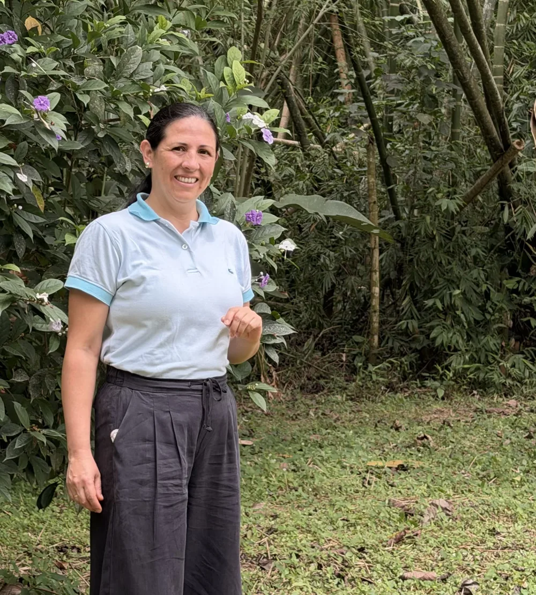

Entrada individual
$87.000 COP
Una persona.
Quiero inscribirmeSandra Grast · Conferencia experiencial
Cuando seguir igual ya no es una opción.
Hotel Buenavista, Bucaramanga Presencial
Desde $87.000 · Cupos limitados
Y quizá ha llegado el momento de observarlo.
Conferencia experiencial de reflexión y descubrimiento personal
VOLVER A TI es una experiencia para detenerte, reconocerte y cuestionar aquello que has estado sosteniendo, para comenzar a elegir qué quieres construir a partir de ahora.
VOLVER A TI no es una fórmula mágica que resolverá todos tus problemas en una sola sesión. No es un sustituto de la atención psicológica o de otros servicios profesionales de salud cuando estos son necesarios.
$87.000 COP
Una persona.
Quiero inscribirmePrimeras 20 parejas
$127.000 COP
Dos personas.
Quiero inscribirme en parejaPago en línea con Wompi; el botón abre la pasarela en una pestaña nueva.
¿Aún no decides?
[FALTA: confirmar que $127.000 es por pareja y si los cupos se cuentan por persona o por entrada · hora de finalización ·confirmar dirección y nombre del salón con el hotel · medios de pago aceptados (PSE, Nequi, tarjeta) · qué incluye la entrada · qué recibe el comprador tras pagar · política de cambios y reembolsos]

¿Quién es Sandra Grast?
[FALTA: confirmar que Sandra se siente cómoda publicando este relato personal y que representa fielmente su historia · fotografía profesional definitiva de Sandra (esta es provisional)]
Mi nombre es Sandra Grast.
Soy coach ontológica, conferencista, mentora de vida, educadora y enfermera profesional.
No hablo desde la idea de tener todas las respuestas. Hablo desde la experiencia de haber tenido que hacerme preguntas que cambiaron mi manera de mirar la vida.
El recorrido de Efecto GRAST integra siete movimientos:
No está concebida como una charla motivacional tradicional. Es una experiencia participativa que combina preguntas, situaciones cotidianas y ejercicios de reflexión.
No. La experiencia está planteada para que puedas participar desde tu propia vida, sin necesidad de conocimientos previos.
No es necesario que compartas públicamente asuntos personales. Puedes realizar tu reflexión de manera individual y participar respetando tus propios límites.
Elige tu entrada en la sección Elige tu entrada y completa el pago en línea con Wompi. Si antes quieres más información, y te escribimos. [FALTA: procedimiento definitivo de inscripción y pago: qué pasa después de pagar]
No tienes que tener todas las respuestas. Pero puedes empezar por hacerte una pregunta diferente.
Quiero inscribirmeConsulta la fecha, el lugar y las condiciones de participación antes de completar tu inscripción.
Visible solo con ?revision=1. Lista generada desde los marcadores .falta de la página.